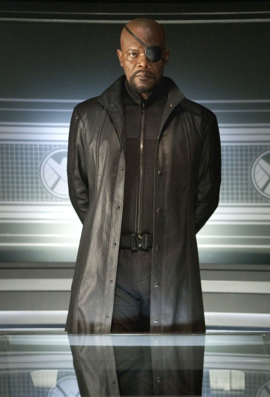
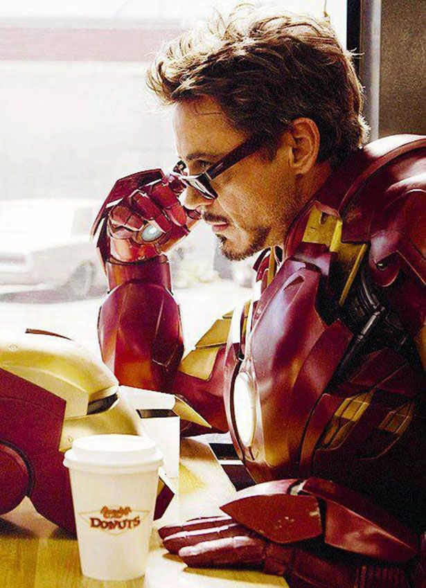
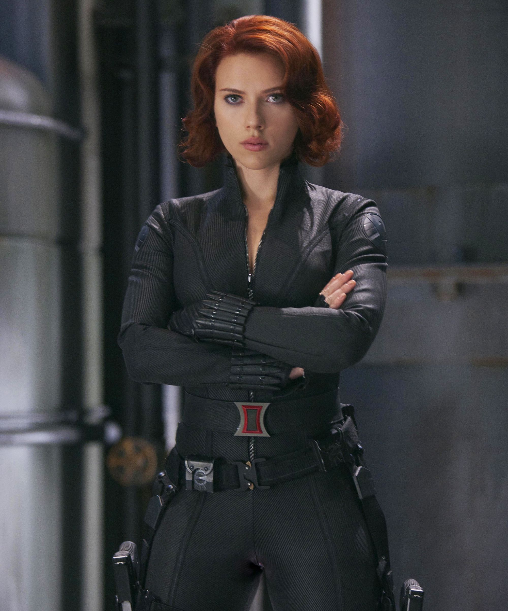
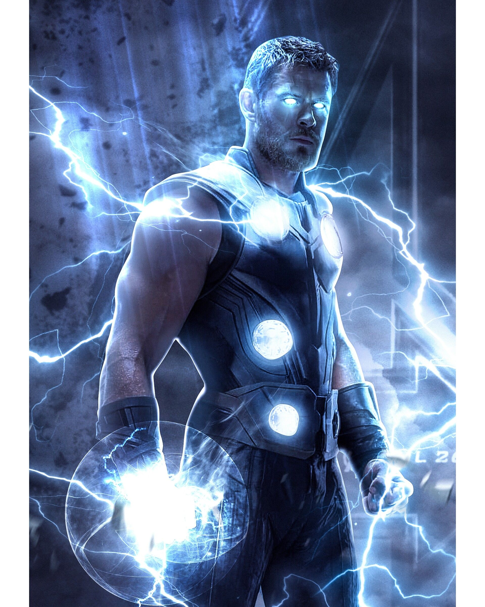
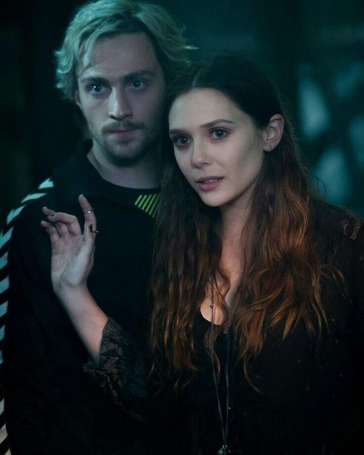
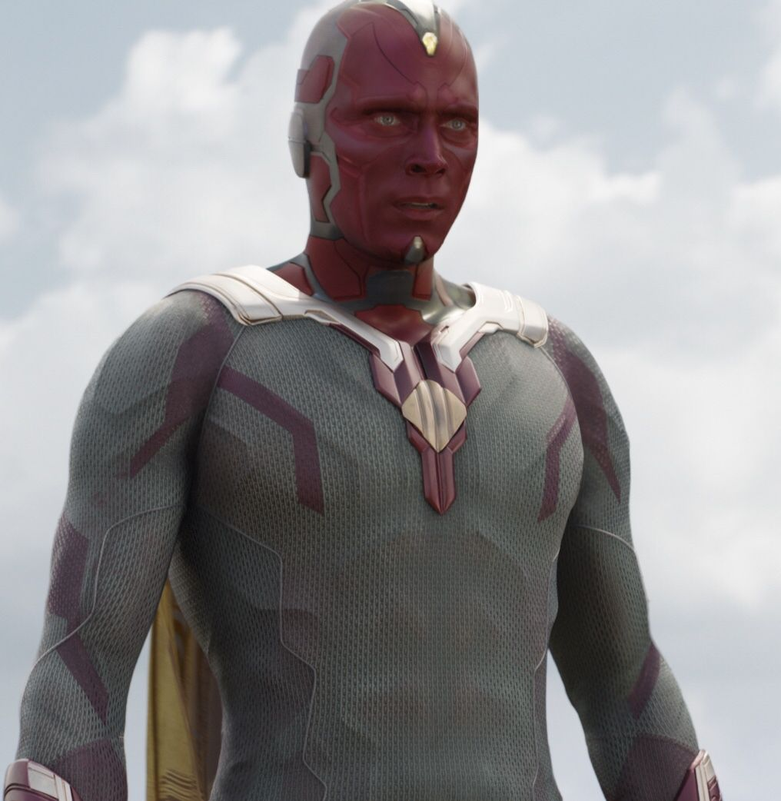
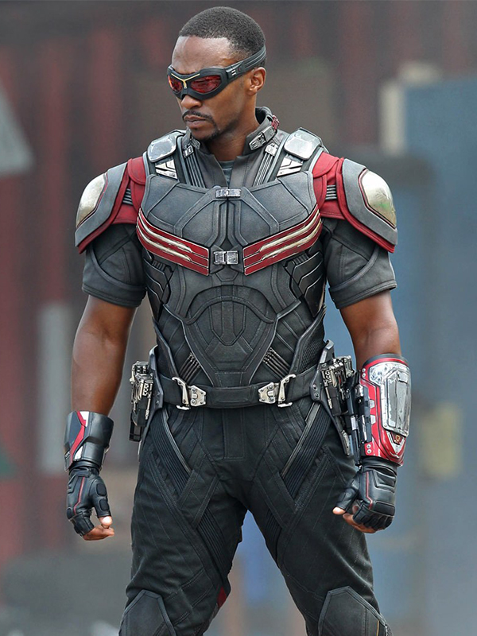
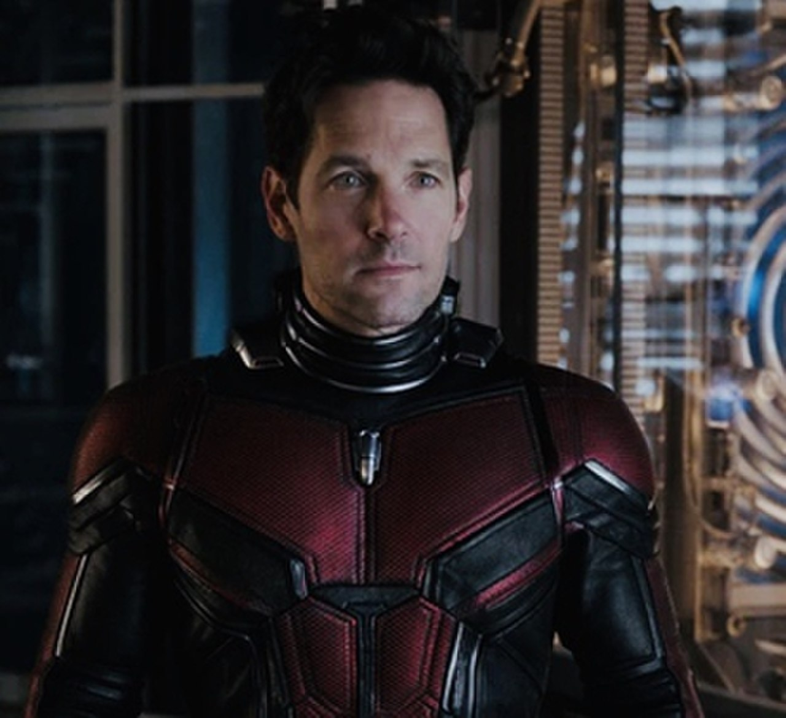
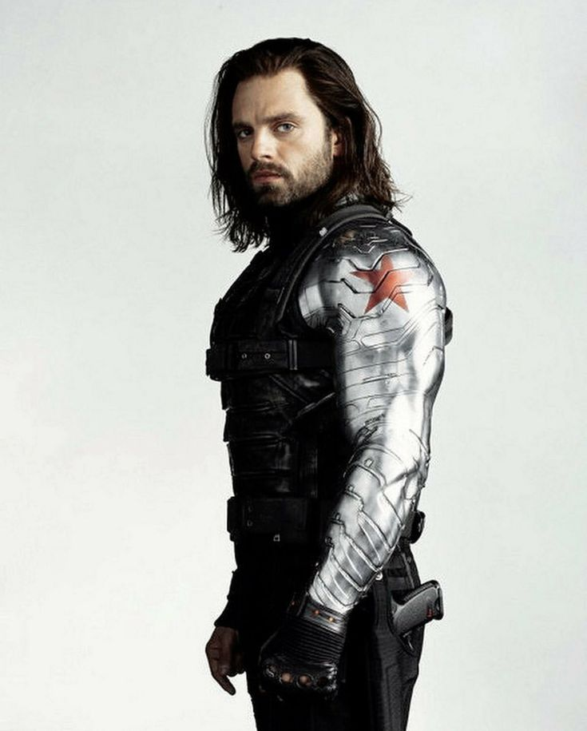

После спасения мира в Битве за Нью-Йорк они получили мировое признание, и многие стали называть их Героями Нью-Йорка.
История
В 1995 году Щ.И.Т. был вовлечен в конфликт с Кри и Скруллами, и Ник Фьюри объединился с Кэрол Дэнверс, чтобы спасти Скруллов от Кри и вернуть Тессеракт. Тогда Фьюри воочию увидел, что человечество не способно справиться с межгалактическими угрозами самостоятельно. Однако он также понял, что кто-то со сверхспособностями вполне могут быть защитниками Земли, когда Щ.И.Т.а недостаточно. Поэтому Фьюри решил найти защитников для Землю от будущих межгалактических угроз.
Поскольку Дэнверс покинула Землю и не будет доступна всякий раз, когда понадобится помощь, Фьюри начал искать людей с невероятными силами и способностями, такими же как у Кэрол, в надежде собрать их вместе как команду, чтобы они сражались и защищали Землю. Первоначально инициатива называлась "The Protector Initiative", однако после того, как Фьюри увидел позывной Данверс, когда она служила в ВВС США, он переименовал ее в "Avengers Initiative" (Инициатива Мстители).
Фьюри также включил двух самых элитных агентов Щ.И.Т.а, Наташу Романову и Клинта Бартона, для Инициативы Мстителей из-за их уникальных и невероятных навыков, которые ставят их выше других агентов. Фьюри всегда держал модифицированный пейджер, который он мог использовать, чтобы позвонить Кэрол, но решил не просить ее присоединиться к Мстителям, вместо этого продолжая поиск других людей и привлекая Дэнверс в качестве самого последнего ресурса.
В то время как Щ.И.Т. выделял большую часть своих ресурсов на строительство Трискелиона, Ник Фьюри использовал финансы для наблюдения за выдающимися или улучшенными личностями, посылая агентов для расследования особенных личностей и размещения их в Индексе для последующих встреч.
Члены Мстителей
Основные члены:
Тони Старк
Первым мстителем, кого завербовал Ник Фьюри, стал Тони Старк (Железный человек).
Наташа Романофф
Второй человек, Наташа Романофф (Черная вдова) являласьы сотрудником агентства Щ.И.Т. и автоматически вошла в команду.
Брюс Беннер

Третьим стал Брюс Беннер (Халк), которого завербовала Наташа.
Стив Роджерс

Четвертым присоединился Стив Роджерс (Капитан Америка), завербованный Ником Фьюри.
Тор Одинсон
Пятым стал Тор Одинсон по своей инициативе.
Клинт Бартон

Шестым присоединился Клинт Бартон после избавления от контроля Локи.
Близнецы Максимофф
Седьмым и восьмым стали близнецы Пьетро и Ванда Максимофф (Ртуть и Алая ведьма соответственно. (К сожалению, Пьетро был убит Альтроном.)
Вижн
Девятым стал Вижн, которого создал Альтрон (тело) и установкой разумного интеллекта Джарвиса от Тони и Брюса.
Джеймс Роуди

Десятым пришел Джеймс Роуди (Воитель) для отражения атаки Альтрона в Заковии.
Сэм Уилсон
Одиннадцатый, после всего кипиша во время атаки злодея, стал Сэм Уилсон (Сокол).
Питер Паркер

Тринадцатого Питера Паркера (Человек-паук) завербовал Тони Старк для выяснений отношений между мстителями.
Скотт Лэнг
Четырнадцатого Скотта Лэнга (Человек-муравей) завербовал Клинт Бартон в команду Кэпа, также для выяснений отношений между мстителями.
Баки Барнс
Пятнадцатым, после промывки мозга стал Баки Барнс (Зимний солдат).